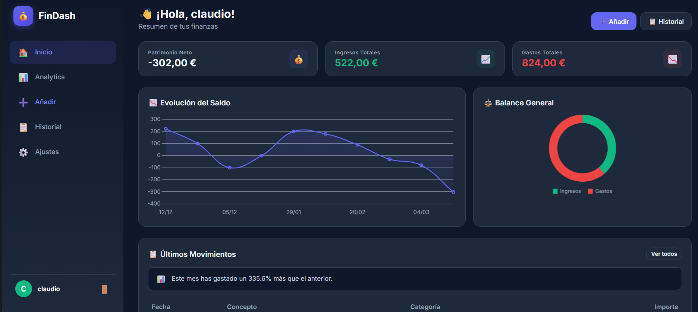
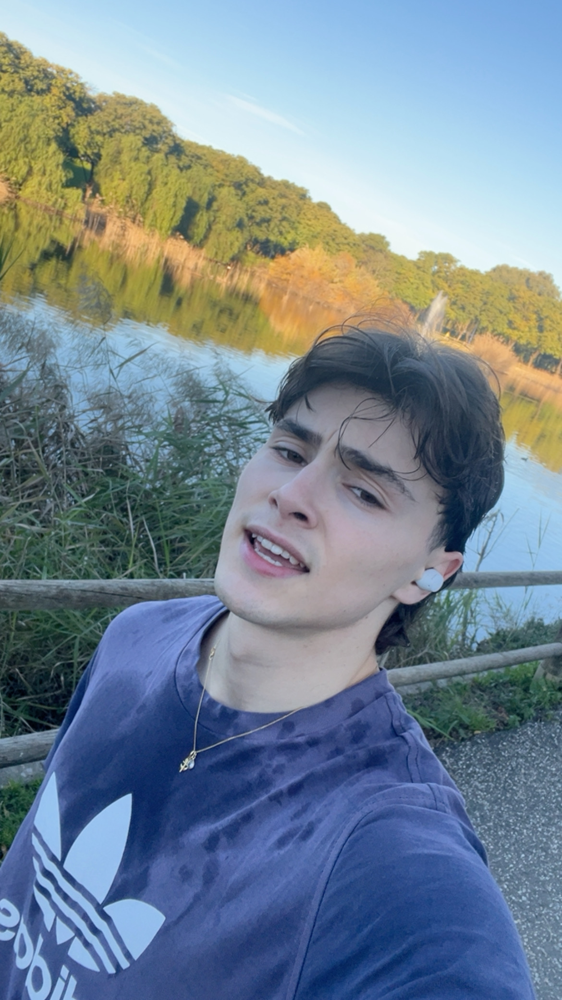
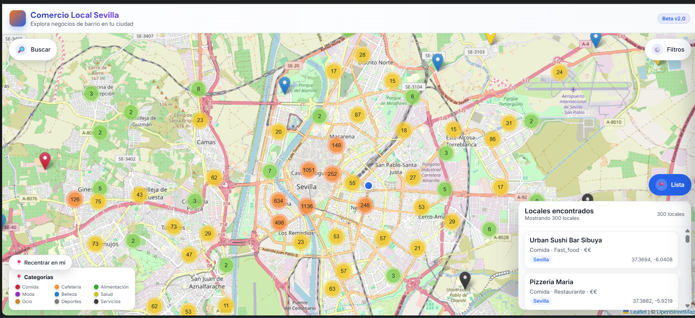
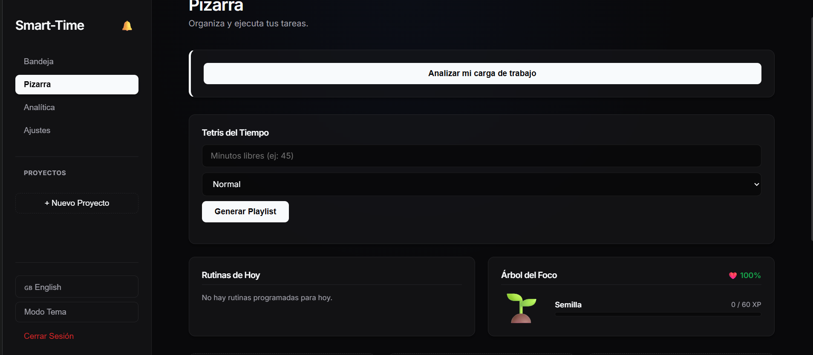

Dashboard Financiero
Herramienta donde puedes registrar tus gastos e ingresos y visualizarlos de forma clara.
Ver proyectoHola, soy Claudio.
Soy un estudiante de marketing al que le apasiona el mundo digital y el sector financiero.
Estoy en busca de nuevos retos y oportunidades para desarrollar mis habilidades y conocimientos.

Soy una persona con experiencia en el uso de herramientas digitales relacionadas con la programación con el fin de crear páginas web.
Actualmente estudio Marketing en la Universidad de Sevilla (US), donde he adquirido conocimientos en publicidad, análisis de mercado y estrategia de marketing digital.
US Visitar universidadAunque soy estudiante, he trabajado en dos empleos:

Herramienta donde puedes registrar tus gastos e ingresos y visualizarlos de forma clara.
Ver proyecto
Plataforma que muestra la ubicación de productores locales y sus productos en toda Sevilla.
Ver proyecto
Aplicación para gestionar el tiempo y organizar tus tareas diarias o cualquier tipo de actividad.
Ver proyectoPuedes escribirme a: claccolu06@gmail.com
También puedes encontrarme en LinkedIn
Teléfono: +34 610 218 758